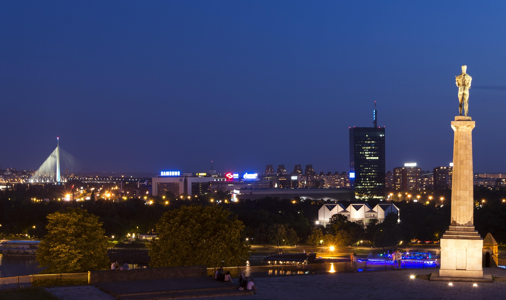

Belgrade
Belgrade, the capital of Serbia, is a city with a rich history and vibrant culture. Known for its lively nightlife, historical architecture, and beautiful parks, Belgrade offers something for everyone. Must-see attractions include the Belgrade Fortress, Knez Mihailova Street, and the Nikola Tesla Museum. For more information, visit Belgrade Tourist Organization.
Novi Sad
Novi Sad, the second-largest city in Serbia, is known for its charming atmosphere and cultural events. The city hosts the famous EXIT music festival at Petrovaradin Fortress, which offers stunning views of the Danube River. Other highlights include the historic city center, Danube Park, and the Museum of Vojvodina. For more information, visit Novi Sad Tourist Organization.
Kopaonik
Kopaonik is Serbia's largest mountain range and a popular destination for winter sports enthusiasts. Known as "The Silver Mountain," Kopaonik offers excellent skiing and snowboarding opportunities, as well as beautiful hiking trails in the summer. The Kopaonik National Park is home to diverse flora and fauna, making it a great place for nature lovers. For more information, visit Kopaonik Tourist Information.